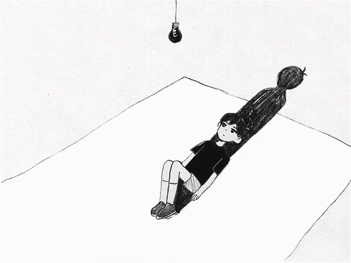

Suatu hari, Taufik berlibur ke Bandung. Semuanya baik-baik saja di awal sampai saat ingin pulang ke Banjarmasin, sesuatu yang buruk terjadi. Sebuah peristiwa yang hampir merenggut nyawanya dan meninggalkan trauma mendalam.
Saat itu, Taufik sedang berada di ruang tamu, kemudian dia dibawa masuk ke kamar oleh "teman" ibunya. Pintu dikunci dari dalam, dia kemudian dicekik dan hampir terbunuh oleh pisau. Andai dia tidak berhasil membela diri, mungkin dia sudah tiada.
Akibat kejadian itu, Taufik mengalami trauma berat. Hidupnya berubah drastis, dan dia merasa sulit untuk kembali ke kehidupan normal. Dia sering mengalami mimpi buruk, dan rasa takut yang mendalam terhadap situasi yang mengingatkannya pada kejadian itu.
Pada suatu waktu, Taufik, sedang berbaring di alam bawah sadarnya. Bayangannya melahirkan sosok yang akan menjadi penjaga untuknya, sosok itu membuka mata dan menatap Taufik dengan tatapan dingin.

Momen penciptaan Alter

Pertemuan pertama Taufik dengan Alter
Sejak saat itu, mereka tidak pernah benar-benar terpisah. Sosok itu kemudian dikenal sebagai "Alter".